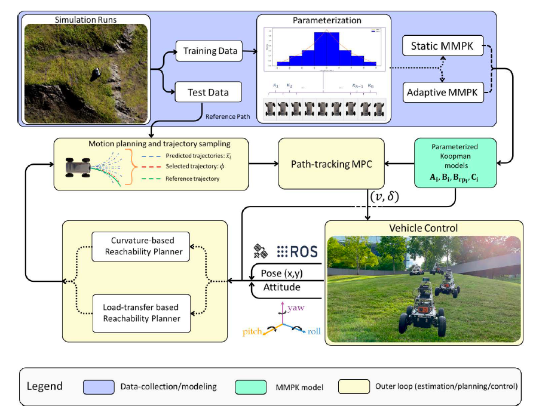
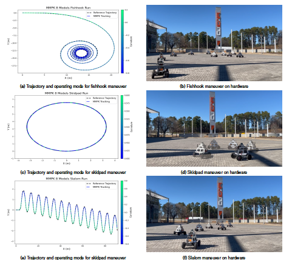
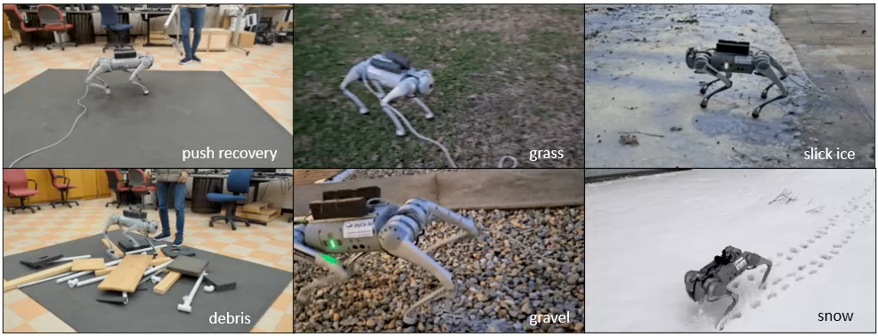
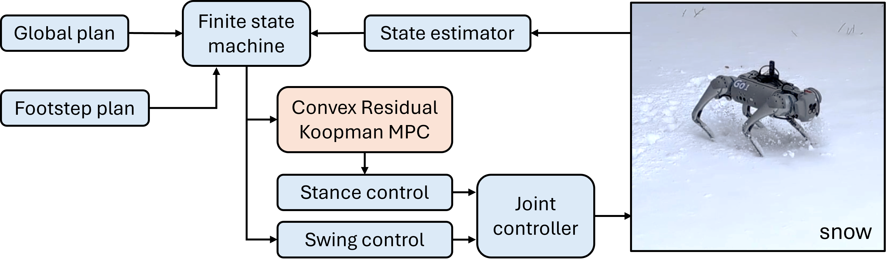

Off-Road Autonomy and Intelligent Robotic Systems
Data-driven dynamics, adaptive control, and safe navigation beyond structured roads.
We connect Koopman and Perron–Frobenius operator methods with planning and feedback control for autonomous robots. Our work spans terrain-dependent vehicle modeling, predictive control, density-based safety, and legged locomotion, with validation in simulation and on robotic hardware.
01 / Data to dynamics
Data-Driven Vehicle Dynamics and Koopman Modeling
Off-road vehicles encounter changing traction, terrain geometry, and wheel–ground interactions. We develop situationally aware models that learn these effects from trajectory data and retain a structure suitable for prediction and control.
Koopman representations lift measured vehicle states into observable coordinates. A family of parameterized models captures different operating conditions, while auxiliary inputs account for environmental perturbations. Simulation and hardware data connect model identification with motion planning and feedback control.
Project Varuna brings these components together in an end-to-end workflow. Experimental work includes F1TENTH and the 1:5-scale Hunter SE platform; the broader research program investigates transfer to larger ground vehicles.
Featured manuscript / Under review
Modeling and Control of Off-road Autonomous Vehicles with Situationally Aware Data-Driven Framework

02 / Models in the loop
Adaptive and Predictive Control for Off-Road Vehicles
A single global vehicle model can lose accuracy as maneuvers and operating conditions change. The multi-model parameterized Koopman (MMPK) framework learns curvature-dependent predictors and uses them within local trajectory planning and model predictive control.
The IJRR work combines offline model learning with online planning and linear MPC for switched Koopman dynamics. Hunter SE experiments evaluate fishhook, skidpad, and slalom tracking. These benchmark maneuvers test model and controller behavior; they are distinct from the terrain-adaptation studies in Project Varuna.
Related research explores ensemble model selection and meta-adaptive Koopman operators, allowing the predictive model to respond to new vehicle behavior and operating regimes using limited new data.
Featured publication / IJRR, 2026
Expanding Autonomous Ground Vehicle Navigation Capabilities through a Multi-Model Parameterized Koopman Framework



04 / Learning for legged autonomy
Quadruped Locomotion and Legged Robot Autonomy
Residual Koopman MPC (RK-MPC) augments nominal single-rigid-body dynamics with a compact, learned residual model. The residual predictor operates in lifted coordinates and corrects model mismatch associated with contact variation and terrain disturbances.
The corrected predictor is embedded in a convex quadratic-program MPC formulation. The preprint reports onboard control at 500 Hz, with evaluation in Gazebo and on a Unitree Go1 across grass, gravel, snow, and ice, as well as debris and push-recovery tests.
These experiments study locomotion using proprioception and commanded motion references. They complement density-based navigation, which addresses where the robot should move and how it should avoid obstacles.




Figure and hardware media: Sriram S. K. S. Narayanan and Umesh Vaidya, RK-MPC. CC BY-SA 4.0; repository MIT license. Still frames extracted without altering the experiments.
Selected Publications
Complete bibliographyVehicle Modeling & Predictive Control
Journal article / 2026
Ajinkya Joglekar, Chinmay Samak, Tanmay Samak, Venkat Krovi, and Umesh Vaidya. Expanding Autonomous Ground Vehicle Navigation Capabilities through a Multi-Model Parameterized Koopman Framework. The International Journal of Robotics Research, 45(12), 1850–1878, 2026.
Journal manuscript / Under review
Ajinkya Joglekar, Umesh Vaidya, and Venkat Krovi. Modeling and Control of Off-road Autonomous Vehicles with Situationally Aware Data-Driven Framework.
Journal article / Accepted, 2026
Sarang Sutavani, Sriram S. K. S. Narayanan, Jonathan M. Smereka, Mark Brudnak, David Gorsich, Venkat Krovi, and Umesh Vaidya. Koopman-based Ensemble Model Selection Framework for Predictive Control of Unmanned Ground Vehicles. Journal of Autonomous Vehicles and Systems. Special issue: Challenges and Opportunities for Modeling, Identification, and Control of Off-Road Vehicle Autonomy.
Journal article / 2026
Sumedh P. Sathe, Tanmay V. Samak, Chinmay V. Samak, Jonathan M. Smereka, Mark Brudnak, David Gorsich, Umesh Vaidya, and Venkat N. Krovi. Meta-Adaptive Koopman Operators for Multi-Regime Vehicle Control. Journal of Autonomous Vehicles and Systems, 2026.
Conference paper / 2025
Chinmay Vilas Samak, Tanmay Vilas Samak, Ajinkya Joglekar, Umesh Vaidya, and Venkat Krovi. Digital Twins Meet the Koopman Operator: Data-Driven Learning for Robust Autonomy. IEEE International Conference on Robotics and Automation (ICRA), 9816–9822, 2025.
Conference paper / 2023
Ajinkya Joglekar, Sarang Sutavani, Chinmay Samak, Tanmay Samak, Krishna Kosaraju, Jonathon Smereka, David Gorsich, Umesh Vaidya, and Venkat Krovi. Data-Driven Modeling and Experimental Validation of Autonomous Vehicles Using Koopman Operator. IEEE/RSJ International Conference on Intelligent Robots and Systems (IROS), 9442–9447, 2023.
Density-Based Safety & Navigation
Journal article / 2026
Sriram Narayanan, Sajad Ahmadi, Javad Mohammadpour Velni, and Umesh Vaidya. Safety-Critical Model Predictive Control Using Discrete-Time Control Density Functions. ASME Letters in Dynamic Systems and Control, 6(1), 011014, 2026.
Conference paper / 2025
Sriram Sundar Krishnamoorthy Shankara Narayanan, Joseph Moyalan, Andrew Zheng, and Umesh Vaidya. Density Functions for Dynamic Safe Navigation of Robotic Systems. American Control Conference (ACC), 2025.
Conference paper / 2024
Joseph Moyalan, Sriram S. K. S. Narayanan, Andrew Zheng, and Umesh Vaidya. Synthesizing Controller for Safe Navigation Using Control Density Function. American Control Conference (ACC), 2024.
Preprint / Journal submission under review
Joseph Moyalan, Sriram S. K. S. Narayanan, and Umesh Vaidya. Control Density Function for Robust Safety and Convergence. arXiv:2407.05133, 2024.
Journal article / 2023
Joseph Moyalan, Yongxin Chen, and Umesh Vaidya. Data-Driven Convex Approach to Off-road Navigation via Linear Transfer Operators. IEEE Robotics and Automation Letters, 2023.
Legged & Aerial Robotics
Preprint / Journal submission under review
Sriram S. K. S. Narayanan and Umesh Vaidya. RK-MPC: Residual Koopman Model Predictive Control for Quadruped Locomotion in Offroad Environments. arXiv:2604.04221, 2026.
Conference paper / 2023
Sriram S. K. S. Narayanan, Duvan Tellez-Castro, Sarang Sutavani, and Umesh Vaidya. SE(3) Koopman-MPC: Data-Driven Learning and Control of Quadrotor UAVs. Modeling, Estimation and Control Conference (MECC), 2023.